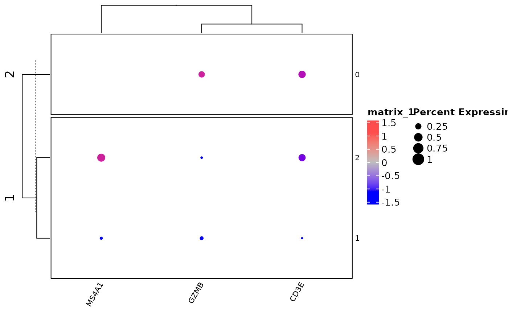

Clustered_DotPlot_nl.RdThis function is a modified version of the Clustered DotPlots function from the scCustomize package. The changes made are:
Clustered_DotPlot_nl(
seurat_object,
features,
scale_dot = TRUE,
colors_use_exp = c("#0000FF", "grey", "#FF4C4C"),
exp_color_min = -2,
exp_color_middle = NULL,
exp_color_max = 2,
print_exp_quantiles = FALSE,
colors_use_idents = NULL,
x_lab_rotate = TRUE,
kcut = 1,
border = "black",
row_km_repeats = 1000,
column_km_repeats = 1000,
row_label_size = 8,
col_label_size = 8,
raster = FALSE,
plot_km_elbow = TRUE,
elbow_kmax = NULL,
assay = NULL,
group.by = NULL,
idents = NULL,
show_parent_dend_line = TRUE,
ggplot_default_colors = FALSE,
seed = 666,
col_dendr = TRUE,
row_dendr = TRUE,
figure_title = ""
)Seurat object name.
Features to plot.
Color palette to use for plotting expression scale. Default is `viridis::plasma(n = 20, direction = -1)`.
Minimum scaled average expression threshold (everything smaller will be set to this). Default is -2.
What scaled expression value to use for the middle of the provided `colors_use_exp`. By default will be set to value in middle of `exp_color_min` and `exp_color_max`.
Minimum scaled average expression threshold (everything smaller will be set to this). Default is 2.
Whether to print the quantiles of expression data in addition to plots. Default is FALSE. NOTE: These values will be altered by choices of `exp_color_min` and `exp_color_min` if there are values below or above those cutoffs, respectively.
specify color palette to used for identity labels. By default if number of levels plotted is less than or equal to 36 it will use "polychrome" and if greater than 36 will use "varibow" with shuffle = TRUE both from `DiscretePalette_scCustomize`.
How to rotate column labels. By default set to `TRUE` which rotates labels 45 degrees. If set `FALSE` rotation is set to 0 degrees. Users can also supply custom angle for text rotation.
`r lifecycle::badge("deprecated")` soft-deprecated. See `feature_km_repeats`
`r lifecycle::badge("deprecated")` soft-deprecated. See `ident_km_repeats`
Size of the feature labels. Provided to `row_names_gp` in Heatmap call.
Logical, whether to render in raster format (faster plotting, smaller files). Default is FALSE.
Logical, whether or not to return the Sum Squared Error Elbow Plot for k-means clustering. Estimating elbow of this plot is one way to determine "optimal" value for `k`. Based on: https://stackoverflow.com/a/15376462/15568251.
The maximum value of k to use for `plot_km_elbow`. Suggest setting larger value so the true shape of plot can be observed. Value must be 1 less than number of features provided. If NULL parameter will be set dependent on length of feature list up to `elbow_kmax = 20`.
Name of assay to use, defaults to the active assay.
Group (color) cells in different ways (for example, orig.ident).
Which classes to include in the plot (default is all).
Logical, Sets parameter of same name in `ComplexHeatmap::Heatmap()`. From `ComplexHeatmap::Heatmap()`: When heatmap is split, whether to add a dashed line to mark parent dendrogram and children dendrograms. Default is TRUE.
logical. If `colors_use = NULL`, Whether or not to return plot using default ggplot2 "hue" palette instead of default "polychrome" or "varibow" palettes.
Sets seed for reproducible plotting (ComplexHeatmap plot).
Logical, cluster the genes (default is FALSE).
Logical, cluster the clusters (default is FALSE).
Figure title column
logical, whether to flip the axes of final plot. Default is FALSE; rows = features and columns = idents.It coul dbe because of a lot of You should add some details (e.g. figures and code used).
Value to use for k-means clustering on features Sets (km) parameter in `ComplexHeatmap::Heatmap()`. From `ComplexHeatmap::Heatmap()`: Apply k-means clustering on rows. If the value is larger than 1, the heatmap will be split by rows according to the k-means clustering. For each row slice, hierarchical clustering is still applied with parameters above.
Number of k-means runs to get a consensus k-means clustering for features. Note if `feature_km_repeats` is set to value greater than one, the final number of groups might be smaller than row_km, but this might mean the original row_km is not a good choice. Default is 1000.
Number of k-means runs to get a consensus k-means clustering. Similar to `feature_km_repeats`. Default is 1000.
random seed for the "varibow" palette shuffle if `colors_use = NULL` and number of groups plotted is greater than 36. Default = 123.
A ComplexHeatmap or if plot_km_elbow = TRUE a list containing ggplot2 object and ComplexHeatmap.
* Removed the colomn annotation bar * Added the option of clustering the identities (rows)
https://divingintogeneticsandgenomics.rbind.io/post/clustered-dotplot-for-single-cell-rnaseq/
# \donttest{
library(Seurat)
#> Loading required package: SeuratObject
#> Loading required package: sp
#>
#> Attaching package: ‘SeuratObject’
#> The following object is masked from ‘package:base’:
#>
#> intersect
Clustered_DotPlot_nl(seurat_object = pbmc_small, features = c("CD3E", "CD8", "GZMB", "MS4A1"),kcut = 2)
#> scCustomize v2.1.2
#> If you find the scCustomize useful please cite.
#> See 'samuel-marsh.github.io/scCustomize/articles/FAQ.html' for citation info.
#> Loading required package: grid
#> ========================================
#> ComplexHeatmap version 2.18.0
#> Bioconductor page: http://bioconductor.org/packages/ComplexHeatmap/
#> Github page: https://github.com/jokergoo/ComplexHeatmap
#> Documentation: http://jokergoo.github.io/ComplexHeatmap-reference
#>
#> If you use it in published research, please cite either one:
#> - Gu, Z. Complex Heatmap Visualization. iMeta 2022.
#> - Gu, Z. Complex heatmaps reveal patterns and correlations in multidimensional
#> genomic data. Bioinformatics 2016.
#>
#>
#> The new InteractiveComplexHeatmap package can directly export static
#> complex heatmaps into an interactive Shiny app with zero effort. Have a try!
#>
#> This message can be suppressed by:
#> suppressPackageStartupMessages(library(ComplexHeatmap))
#> ========================================
#> ========================================
#> circlize version 0.4.16
#> CRAN page: https://cran.r-project.org/package=circlize
#> Github page: https://github.com/jokergoo/circlize
#> Documentation: https://jokergoo.github.io/circlize_book/book/
#>
#> If you use it in published research, please cite:
#> Gu, Z. circlize implements and enhances circular visualization
#> in R. Bioinformatics 2014.
#>
#> This message can be suppressed by:
#> suppressPackageStartupMessages(library(circlize))
#> ========================================
#>
#> Attaching package: ‘dplyr’
#> The following objects are masked from ‘package:stats’:
#>
#> filter, lag
#> The following objects are masked from ‘package:base’:
#>
#> intersect, setdiff, setequal, union
#> Warning: The following requested variables were not found: CD8
#> Warning: Scaling data with a low number of groups may produce misleading results

# }